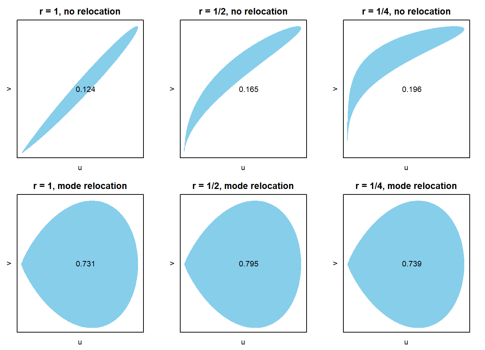
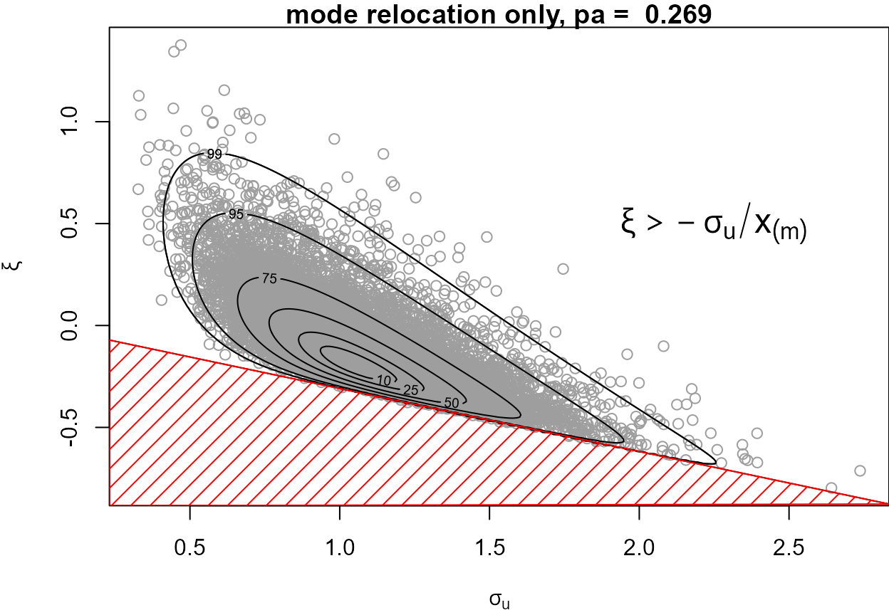
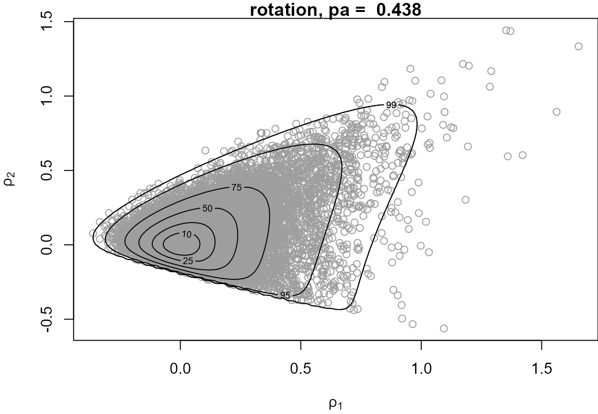
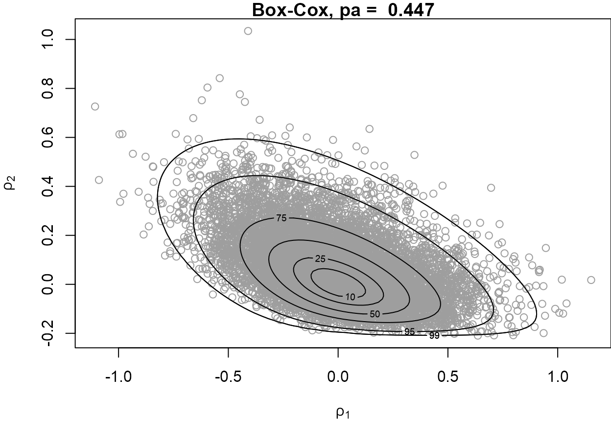
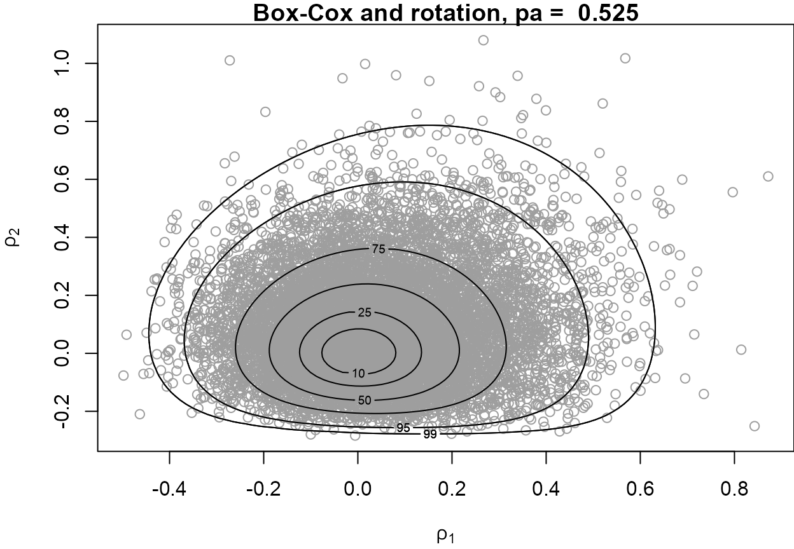

How did revdbayes start?
- I needed to sample quickly and automatically from many EV (generalised Pareto) posteriors
-
threshr: threshold selection based on
- out-of-sample EV predictions
- leave-one-out cross-validation
- wanted to account for parameter uncertainty
- wanted to avoid MCMC tuning and convergence diagnostics
What does revdbayes do?
- Direct sampling from (simple) EV posterior distributions
- Has similar functionality to evdbayes
| method |
Markov chain Monte Carlo (MCMC) |
ratio-of-uniforms (ROU) |
| tuning |
required |
largely automatic |
| sample |
dependent |
random |
| checking |
yes |
no |
Increasing probability of acceptance
\[ p_a(d, r) = \frac{\int f(x) {\rm ~d}x}{(r d + 1) \, a(r) \displaystyle\prod_{i=1}^d \left[b_i^+(r) -b_i^-(r) \right]} \]
-
Relocate the mode to zero (hard-coded into rust)
-
Choice of \(r\) (\(r = 1/2\) optimal for zero-mean normal)
-
Rotation (\(d > 1\)): the weaker the association the better
-
Transformation: symmetric better than asymmetric
(EV posteriors can exhibit strong dependence and asymmetry)
\(C(r)\) for N(10, 1)

R exercises 1
- 1D normal
- 1D log-normal
- 2D normal
- 1D gamma
For fun!
Can you find simple (1D) examples that throw
Use ?Distributions for possibilities
Summary of ROU and rust
- Can be useful for
- suitable low-dimensional distributions
- for which a bespoke method does not exist
- Box-Cox transformation requires positive variable(s)
- to do: generalise to Yeo-Johnson transformation
- Cannot be used in all cases
- unbounded densities: perhaps OK after transformation
- heavy tails: choose \(r\) appropriately and/or transform
- multi-modal: OK in theory, but need to find global optima
See When can rust be used?
Bayesian EV analyses
-
Prior \(\pi(\theta)\) for model parameter vector \(\theta\)
-
Likelihood \(L(\theta \mid \mbox{data})\)
-
Posterior \(\pi(\theta \mid \mbox{data})\) via Bayes’ theorem \[ \pi(\theta \mid \mbox{data}) = \frac{L(\theta \mid \mbox{data}) \pi(\theta)}{P(\mbox{data})} = \frac{L(\theta \mid \mbox{data}) \pi(\theta)}{\int L(\theta \mid \mbox{data}) \pi(\theta) \,\mbox{d}\theta} \]
- Simulate a large sample from \(\pi(\theta \mid \mbox{data})\), often using MCMC
In revdbayes
- 4 standard univariate models: GEV, OS, GP, PP
- Simplest, i.i.d. case
GP model for threshold excesses 1
Negative association + asymmetry \(\phantom{\xi + \sigma / x_{(m)}}\)

GP model for threshold excesses 2
Rotation about the MAP estimate based on the Hessian at the MAP \(\phantom{\xi + \sigma / x_{(m)}}\)

GP model for threshold excesses 3
Box-Cox transformations of \(\phi_1 = \sigma_u > 0\) and \(\phi_2 = \xi + \sigma / x_{(m)} > 0\)

GP model for threshold excesses 4
Box-Cox first then rotate \(\phantom{\xi + \sigma / x_{(m)}}\)

Other models in revdbayes
- GEV for block (annual?) maxima
- Order statistics (OS): largest \(k\) observations per block
- Non-homogeneous point process (PP) for threshold exceedances
- approximates binomial for threshold exceedance and GP for excesses
- GEV parameterisation: \((\mu, \sigma, \xi)\)
- choice of block length affects posterior sampling efficiency
R exercises 2
-
GP and binomial-GP
- compare ROU posterior sampling approaches
- posterior predictive model checking
- predictive inference
-
PP: sampling efficiently from the posterior
-
GEV: compare
revdbayes and evdbayes
Options to experiment
- changing threshold
- playing with function arguments
Reflections
Limitations
- Very simple EV models
- ROU efficiency drops with number of parameters
Current uses
-
threshr Threshold Selection and Uncertainty for Extreme Value Analysis
-
mev
-
lambdadep(): a bivariate dependence function (many posterior samples required)
-
tstab.gpd(): threshold stability plot
-
Estimation of the extremal index using the \(K\)-gaps model